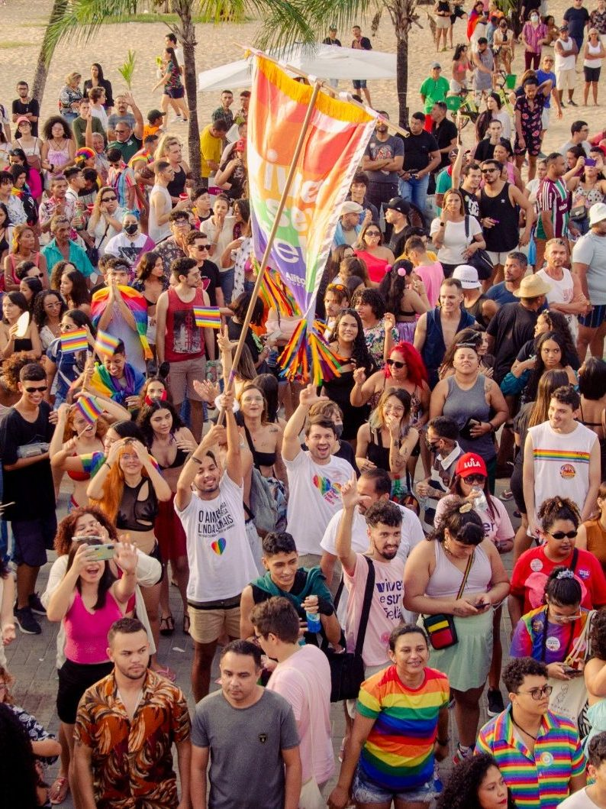
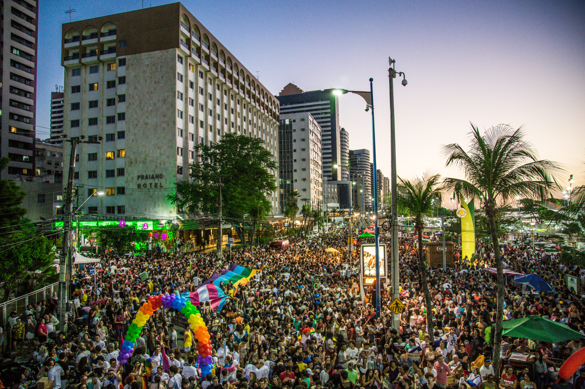
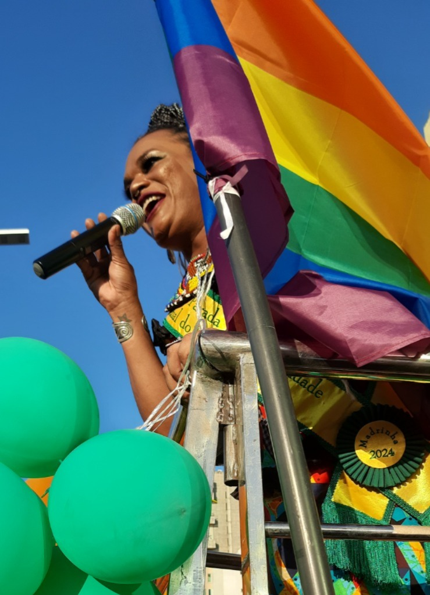
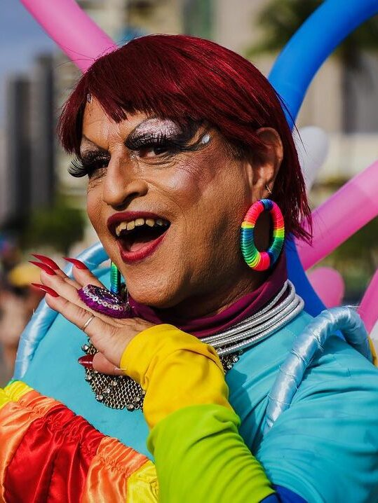
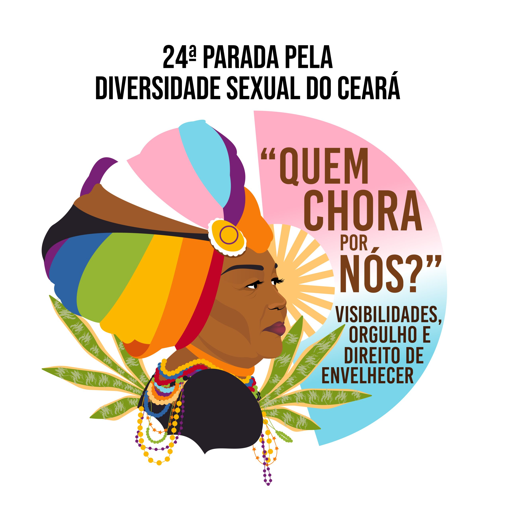
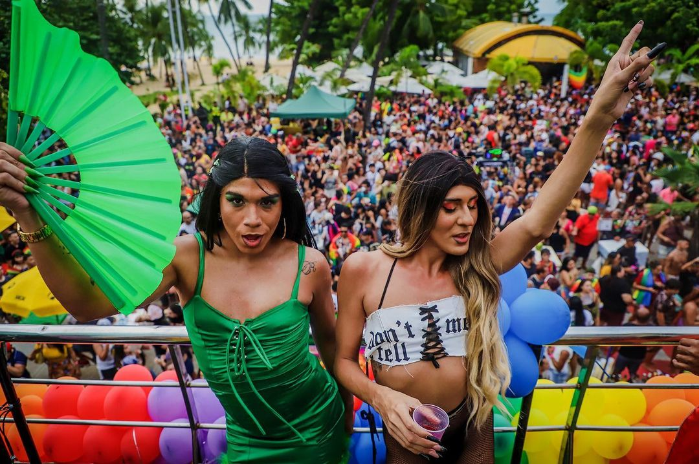
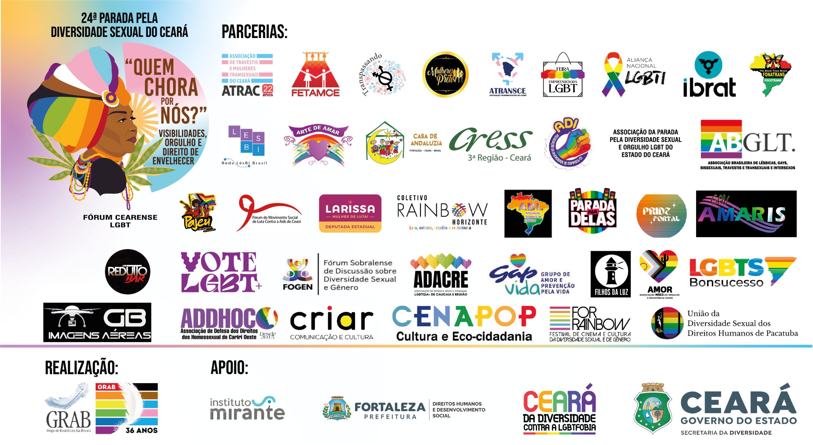

24ª Parada pela Diversidade Sexual do Ceará
Programação Oficial

Foto: Acervo GRAB
Programação Oficial
- 13hConcentração em frente a barraca do Joca
- 16hAbertura oficial da 24ª Parada
- –Fala das Madrinhas da Parada
- –Homenagens
- –Leitura do Manifesto
- –Hora da militância LGBTI+
- 17h30minSaída da concentração ao pôr do sol
- 18hMinuto de silêncio e protesto contra LGBTIFOBIA
- 18h01min
Apresentações artivistas:
DJ Base: Angel History
DJs Residentes: Facó e Lemon4nti
Participações/Performances: Irís Vivaz, Maittê, DJ Maryjenny e Rafael Amora
Shows: Montage, Makem e Nega Lu - 22hEncerramento (Antes do Aterro da Praia de Iracema)
O Que Nos Movimenta!
As Paradas pela Diversidade Sexual têm como objetivo Promover os Direitos Humanos de lésbicas, gays, bissexuais, travestis, transexuais, intersexos e de outras identidades de gênero; a diversidade sexual como um componente imprescindível da convivência social, num contexto de cidadania e respeito.
A Parada pela Diversidade do Ceará é um evento sem fins lucrativos e representa a história de um movimento social que se transformou em uma das maiores manifestações culturais do Estado, reunindo anualmente, cerca de 1 milhão de pessoas para pedir o fim do preconceito e da discriminação, mas sobretudo, também exigir respeito e direitos conforme determina a Constituição Brasileira e Tratados de Direitos Humanos Internacionais.

Foto: Willian Sambora

Foto: Grá Dias
Um Caminhar que Vem de Longe!
Desde 1999, o Grupo de Resistência Asa Branca – GRAB realiza as Paradas pela Diversidade Sexual do Ceará, que terá sua 24ª Edição em 2025.
A manifestação cultural e política tem como proposta a construção de visibilidade massiva das pautas políticas e de direitos humanos, a cobrança pública pela efetivação de políticas para populações LGBTI+, realizando uma caminhada, com faixas e trios elétricos.
Iniciativas semelhantes ocorrem em outras 26 capitais brasileiras, assim como, em outras cidades cearenses, com apoio do Poder Público, da Polícia Militar, Guarda Municipal, Autarquia Municipal de Trânsito – AMC, dentre outros órgãos da administração pública.
Um Verdadeiro Mar de Gente…
| Ano | Público Estimado |
|---|---|
| 1999 | 500 pessoas |
| 2001 | 2.500 pessoas |
| 2002 | 10.000 pessoas |
| 2003 | 30.000 pessoas |
| 2004 | 60.000 pessoas |
| 2005 | 200.000 pessoas |
| 2006 | 500.000 pessoas |
| 2007 | 800.000 pessoas |
| 2008 | 800.000 a 1.000.000 de pessoas |
| 2009 a 2017 | 1.000.000 de pessoas |
| 2018 a 2024 | 1.500.000 de pessoas |
Marcos Legais

Foto: Mateus Dantas
Tema de 2025

"Quem chora por nós?" Esse é o questionamento que ecoa forte a memória e as resistências da eterna Thina Rodrigues na luta pelo direito de envelhecer das pessoas LGBTs, sobretudo trans e travestis.
Atividades da Parada
*Todas as atividades são gratuitas.
- Reuniões de Construção Coletiva
- Seminário
- Oficinas e Debates
- Manifesto Político-Artivista
- Feiras e Shows

Foto: Mateus Dantas
Galeria de Fotos
Créditos: Willian Sambora e Chico Gomes
Apoio
